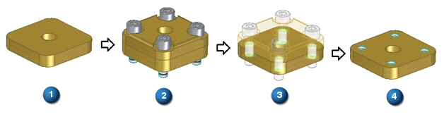
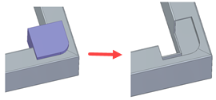

Subtract command (boolean)
Use the Subtract command (boolean) to remove the tool body volume from selected target bodies. You can select multiple target bodies and multiple tool bodies. The tool body can be a design body, a construction body, or other assembly components.
The subtract command has the option of creating synchronous subtractions if possible. If ordered subtractions are created, inter-part copied surfaces are placed in the target bodies. Also for ordered subtractions, there is an option to maintain inter-part links.
You can also use a reference plane or a surface as the tool. These tools have no volume. You choose a direction to subtract volume from the target body.
You can preset the type of output body to create if the resulting body is a non-manifold by using one of the following options on the Boolean Options dialog box.
-
Create multiple bodies
-
Fail (no output)
When an assembly component is in-place activated from a higher level assembly, other assembly components are valid tools for the boolean operation.
Assembly subtract
Holes can be recognized from the cylindrical cuts created using the synchronous and assembly Subtract command. Threaded holes and clearance holes can also be recognized.
Recognize Hole options:
-
Recognize holes as threaded holes if the tool is threaded.
-
Match the nearest large hole from database for non threaded cutouts (to create clearance hole)
-
Do not recognize holes greater than (value).
In the image below:
-
Original part.
-
Fasteners assembled.
-
Holes created using Subtract command.
-
Holes recognized with threads

The Subtract command can subtract assembly objects from frames, pipes, gussets, and internal components created in Solid Edge 2023 and subsequent versions.

The Create Assembly Feature option for the command is disabled for files containing weldment features created in pre-Solid Edge 2023 versions (legacy files).
To enable the option for pre-Solid Edge 2023 files:
-
Delete all weldment parts and features, such as frames, pipes, and assembly features from the active assembly.
-
Save the file.
-
Recreate the deleted features.
How do I
Union selected bodiesSubtract a volume from a body
Intersect selected bodies into a single body
Split a selected body into individual bodies
Learn more
Boolean commandsLook up more details
Union command (boolean)Union command bar
Subtract command bar
Assembly Subtract Options dialog box
Intersect command (boolean)
Intersect command bar
Scale Body command
Scale Body command bar
Scale Body Options dialog box
Split command (boolean)
Split command bar
Boolean Options dialog box